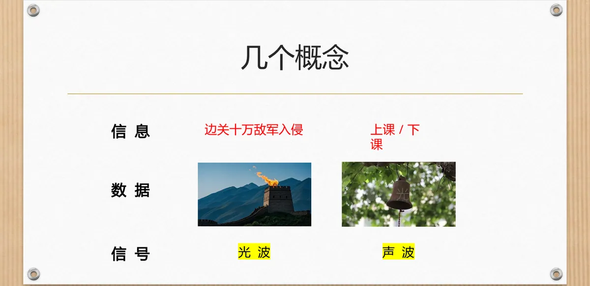
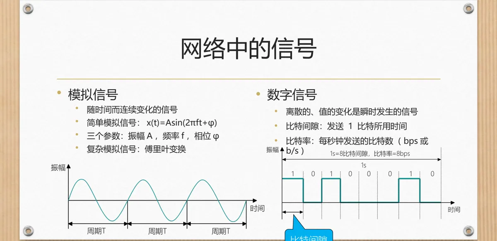
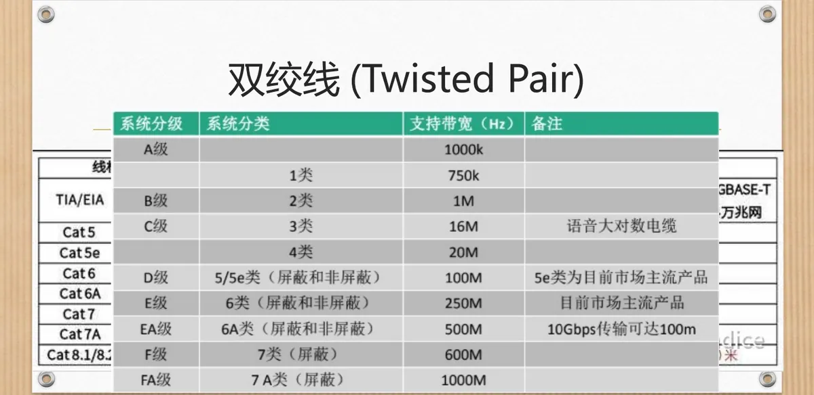
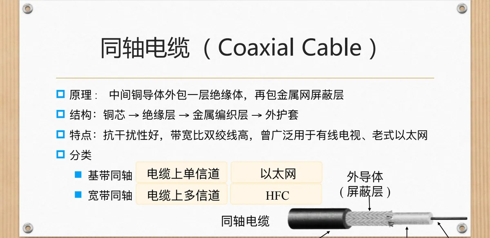
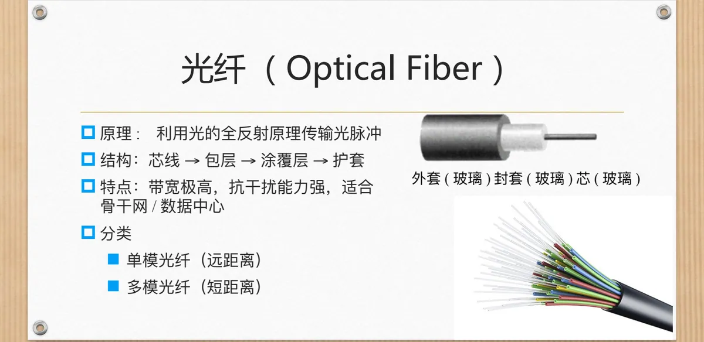
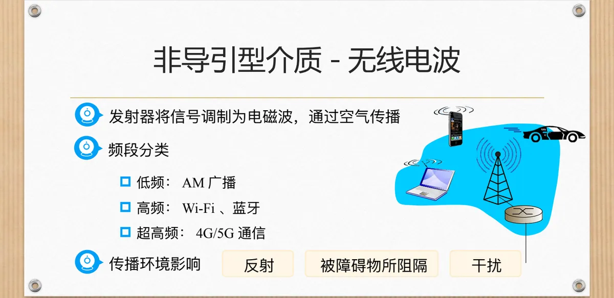

计算机通信与网络 · 第二版讲义 · 第 2 章 网络中的数据通信
2.1 网络中的信号及传输介质
网络把数据从一个地方送到另一个地方，靠的是一路变换的信号与承载信号的介质。下面先理清信息、数据与信号的关系，把网络中的信号作一次横向比较；再区分模拟信号与数字信号，交代比特间隙与比特率；最后依次介绍双绞线、同轴电缆、光纤与无线电波。
1. 信息、数据与信号
通信的本质是传递信息。信息可以是「边关十万敌军入侵」这样一条消息，也可以是「上课」「下课」这样一个约定，但它本身是抽象的；要表达、要保存、要处理，就得把它落到具体形式上，这种承载信息的表达形式就是数据。数据要跑起来，还必须转换成信号——声波、光波，或者电流与电磁波。
三者的关系可以概括为一句话：信息的表达需要载体，这就是数据；数据的传输依赖于电磁信号。信号（Signal）是数据的电、磁或光的表示形式，也是数据能够沿传输介质传播的形态。

2. 网络中的三种信号
按物理形式，网络中常用的信号分三种：有线电信号，即沿金属导线传播的电流；无线电信号，靠电磁波在自由空间中传播；光信号，靠光脉冲在光纤中传播。选哪一种，实际是在传输带宽、抗干扰能力、使用成本与应用场景之间做取舍。
| 信号类型 | 传输带宽 | 抗干扰能力 | 使用成本 | 主要应用场景 |
|---|---|---|---|---|
| 有线电信号 | 中等 | 中等 | 低 | 局域网、电话网 |
| 无线电信号 | 小～中等 | 弱 | 中 | Wi-Fi、蜂窝网络 |
| 光信号 | 大 | 强 | 高 | 局域网、城域网、广域网 |
光信号带宽最大、抗干扰最强，代价是成本最高，主要用于局域网、城域网与广域网的主干部分；有线电信号成本最低，是局域网与传统电话网的主力；无线电信号不必布线，以带宽和抗干扰换取移动性，Wi-Fi 与蜂窝网络离不开它。表里的带宽指信道能传送信号的频带宽度，与 1.4 节的带宽指标是同一个概念。
3. 模拟信号与数字信号
再看取值随时间怎样变化，又得到一对概念。模拟信号（Analog Signal）随时间连续变化，例如声波造成的空气压强起伏，任意时刻都有取值；数字信号（Digital Signal）则离散，取值变化瞬时发生，只在一组有限取值之间跳变。
最简单的模拟信号是正弦波，可以写成 x(t) = A sin(2πft + φ)，三个参数决定它的样子：振幅 A 是最大的偏离程度，频率 f 是每秒钟重复的次数，相位 φ 决定波形在时间轴上的起始位置。实际信号很少是单纯的正弦波，但都可以分解成若干这样的正弦波之和，所用的工具是傅里叶变换。
数字信号以比特为单位传送数据：发送一个比特所占用的时间称为比特间隙，每秒钟发送的比特数称为比特率，单位是比特每秒，记作 bps 或 b/s。两者互为倒数，比特间隙越短，比特率就越高。比特怎样变成线路上实际传播的波形，是 2.2 节「网络中的数据传输」要接着解决的问题。

4. 导引型介质与非导引型介质
导引型介质（Guided Media）是固体媒体，信号沿它被导引着前进：双绞线，传统电话线就是它；同轴电缆，例如电视信号线；光缆，又分单模光纤与多模光纤（课件第 7 张把光缆写作「单模光纤和双模光纤」，第 12 张分类时用的是单模与多模）。非导引型介质（Unguided Media）不约束信号的方向，信号自由传播，主要代表是无线电波。
5. 双绞线
双绞线 TP（Twisted Pair）由两根互相绝缘的铜导线组成，关键在一个「绞」字：两根导线交叉绞合，与外界干扰源的距离不断互换，外界电磁场在两根导线上感应的干扰趋于相同，从而减小电磁干扰。构造上可以拆成铜导体、绝缘层与绞合结构三部分。它成本低、安装方便，只适合短距离通信，以太网是最典型的用武之地。
按有无屏蔽层分为两类：屏蔽双绞线 STP（Shielded Twisted Pair）在导线对之外增加屏蔽层，抗干扰能力更强，价格与施工要求也更高；非屏蔽双绞线 UTP（Unshielded Twisted Pair）结构简单、成本低，是综合布线中最常见的一种。
实际布线时，双绞线还要按电气性能分级。TIA/EIA 用「类」（Category，写作 Cat）来编号，常见的有 Cat5、Cat5e、Cat6、Cat6A、Cat7、Cat7A 与 Cat8.1/8.2；ISO/IEC 则用 Class C、Class D、Class E、Class F 与 Class I/II 表示同一档性能。等级越高，标称的工作频率上限越高（课件对照表里从 1 MHz 量级一直排到 1000 MHz 量级），能承载的以太网标准也随之升高——从 100BASE-T、1000BASE-T，到 2.5GBASE-T、5GBASE-T、10GBASE-T，再到 25/40GBASE-T。工程上把这个等级与要跑的以太网标准对上号即可。

6. 同轴电缆
同轴电缆（Coaxial Cable）是层层包裹的同心结构：铜芯（内导体）、绝缘层、金属网屏蔽层（外导体）、外护套。金属编织层既约束了电磁场又挡住了外来干扰，所以它的抗干扰能力比双绞线好、带宽也更高，曾广泛用于有线电视与老式以太网。
按一条电缆上能容纳多少信道分为两类：基带同轴电缆上只有一个信道，整条电缆的带宽都归这一路信号使用，老式以太网用的就是它；宽带同轴电缆上可以划分多个信道，一条电缆同时传送多路信号，有线电视的 HFC（Hybrid Fiber Coax，光纤同轴混合网）就是这样使用的。

7. 光纤
光纤（Optical Fiber）传送的是光脉冲，原理是光的全反射：光在芯线中前进，遇到芯线与包层的界面时被完全反射回芯线，于是光被「关」在里面沿着光纤传播，几乎不外泄。它的结构与剖面图上的标注相对应：由内向外是芯线（芯）、包层（封套）、涂覆层与护套（外套）。
光纤的长处很突出：带宽极高，抗干扰能力强，适合骨干网与数据中心这类长距离、大容量传送的场合。按光的传播模式分为两类：单模光纤芯径很小，光只以一种模式传播，适合远距离传输；多模光纤芯径较大，光有多个传播模式、脉冲容易展宽，只适合较短距离。代价则是器件与施工成本高。

8. 以太网常用的传输介质与标准命名
以太网（Ethernet）的一系列标准名称，本身就记录了它用过哪些介质、跑多快。名字开头的数字是速率：10BASE 中的「10」表示 10 Mbps，100BASE 中的「100」表示 100 Mbps，1000BASE 中的「1000」表示 1 Gbps，10GBASE 中的「10G」表示 10 Gbps。
数字后面的介质代号指明走什么线：「5」和「2」代表同轴电缆，「T」代表双绞线，「F」代表多模光纤。把三种导引型介质与这些代号对上，就能看出以太网从同轴电缆起步、后来转向双绞线与光纤的缘由。
9. 非导引型介质：无线电波
非导引型介质里最重要的是无线电波：发射器把信号调制到电磁波上，电磁波通过空气传播，接收端再把信号还原出来。没有实体线路的约束，收发两端不必有任何物理连接，这使它天然适合移动通信与难以布线的场合。
自由空间并不像导线那样安静，无线电波会遇到三类麻烦：反射，遇到地面、建筑物等大尺寸物体时改变方向；干扰，来自同一频段上其他设备的信号叠加进来；被障碍物所阻隔，信号强度随之衰减。所以无线电通信的质量更依赖具体的传播环境。
频段不同，用途也不同：低频段用于调幅广播 AM（Amplitude Modulation）；高频段用于 Wi-Fi、蓝牙这类短距离无线通信；超高频段用于 4G、5G 等蜂窝移动通信。频段越高，可用的带宽越大，绕射与穿透能力越弱。它能跑多快，最终由信道的极限容量决定，2.2 节讲完编码与调制之后会用奈氏准则与香农定理回答这个问题。

本节小结
- 信息、数据、信号是三件事：要传的是信息，信息表达成数据，数据再变成可以在介质上传播的信号；
- 网络中的信号分有线电信号、无线电信号与光信号，在带宽、抗干扰、成本与应用场景上取舍：光信号带宽大、抗干扰强但成本高，有线电信号最便宜，无线电信号以带宽和抗干扰换取移动性；
- 模拟信号随时间连续变化，简单模拟信号由振幅、频率、相位三个参数决定；数字信号取值离散、变化瞬时，用比特间隙与比特率描述快慢；
- 传输介质分导引型（双绞线、同轴电缆、光缆，信号沿固体媒体被导引）与非导引型（无线电波，信号自由传播）；双绞线靠绞合抗干扰，分 STP 与 UTP，并按 TIA/EIA 的 Cat 等级（Cat5～Cat8）与 ISO/IEC Class 分级，等级越高可承载的以太网标准越高；同轴电缆分单信道的基带同轴与多信道的宽带同轴（HFC）；光纤靠全反射，分远距离用的单模与短距离用的多模；
- 以太网标准名称里数字是速率、字母是介质代号（「5」「2」为同轴电缆，「T」为双绞线，「F」为多模光纤）；无线电波经调制后在空气中传播，受反射、干扰与障碍物阻隔的影响，按频段分别用于调幅广播、Wi-Fi 与蓝牙、4G/5G 等场合。